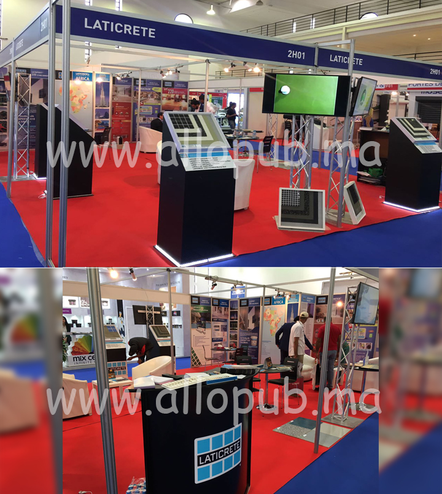
Impression à Casablanca.
AlloPrint réalise votre impression de palissade de chantier, sur vinyle, de vitrine et sur bâche à Casablanca. Du choix du support aux finitions, préparons des visuels adaptés à votre projet.
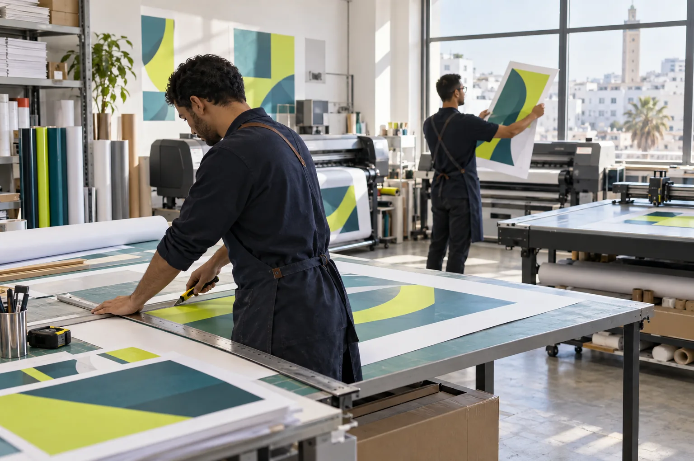
6+ans d’expérience
Petits et grands formats. Toutes quantités.
Le savoir-faire de nos pressiers et la qualité de nos équipements permettent de produire des travaux de qualité supérieure, de la carte de visite à la bâche géante.
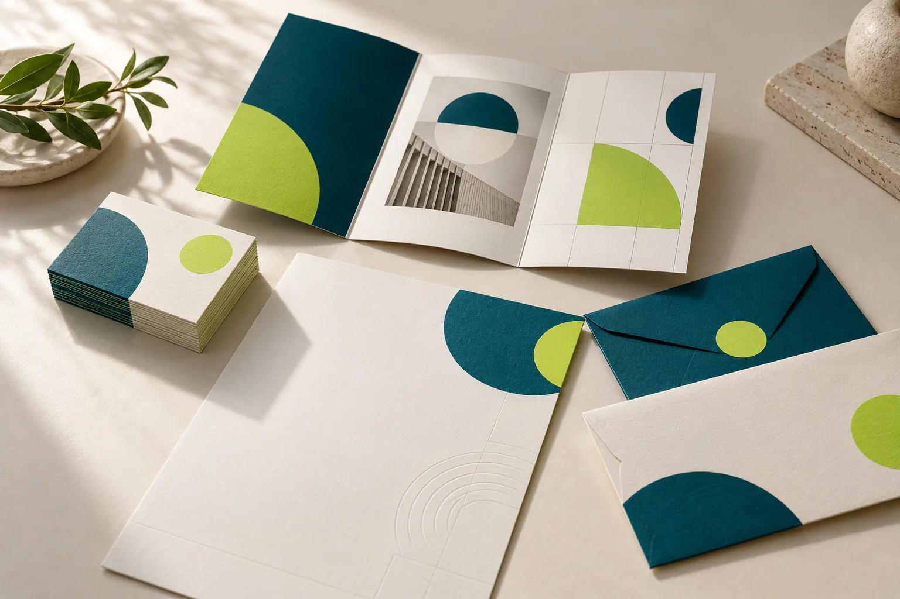
Cumulant plus de 6 années d’expérience, AlloPrint s’est construit une réputation solide en proposant des services à la hauteur de vos attentes et de vos exigences.
- Bâches, vinyles et palissades de chantier
- Impression numérique, petit et grand format
- Avenue 2 Mars, Résidence Marwa, Casablanca
Tous vos supports, en couleur.
Nous imprimons tous vos documents sur une multitude de supports, de la simple feuille au carton, du papier au PVC.
- Vinyle et lettrage
- Stickers, vitrines, décors muraux, textes et logos découpés pour vos surfaces.
- Impression numérique
- Idéale pour les volumes moindres ou urgents, avec des documents personnalisés à l’unité.
- Grand format
- Bâches, kakémonos, vitrophanie, vinyle adhésif, toiles et posters pour l’intérieur comme l’extérieur.
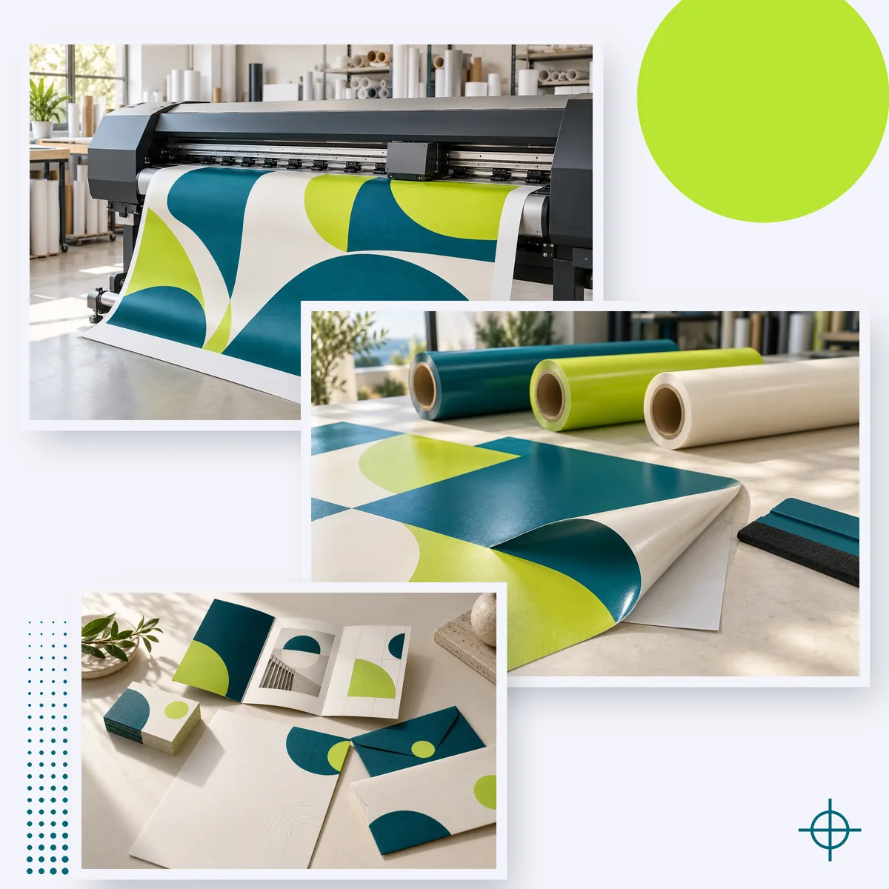
Du fichier au produit fini.
Nous vous accompagnons de la conception à la réalisation, avec rigueur et professionnalisme.
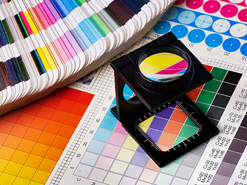
-
1
Devis
Décrivez votre projet en ligne ou par téléphone. Demandez des échantillons de papier avec votre devis.
Vous · devis gratuit
-
2
Conception
Nos graphistes créent ou adaptent vos supports : logotype, mise en page, charte graphique.
Atelier graphique
-
3
Validation
Vous relisez et validez la maquette finale. Rien ne part en impression sans votre accord.
Vous · bon à tirer
-
4
Impression
Numérique pour les courts tirages, grand format, bâche et vinyle pour l’affichage.
Nos pressiers · en atelier
-
5
Finitions
Façonnage et finitions pour des produits élégants et professionnels que vous serez fier de montrer.
Prêt à livrer
Notre atelier d’impression.
Des petites aux grandes quantités, AlloPrint vous conseille pour que vous fassiez les meilleurs choix d’imprimés possibles, quelle que soit leur nature.
- Administratif
- Papiers à en-tête, enveloppes, chemises à rabats, carnets autocopiants.
- Commercial
- Cartes de visite, flyers, dépliants, brochures, calendriers.
- Familial
- Faire-part, menus, invitations, remerciements.
- Signalétique
- Étiquettes, adhésifs, panneaux, plaques à tampons.
Nos réalisations.
Stands, enseignes, affichage et habillage de véhicules : quelques projets réalisés pour nos clients.
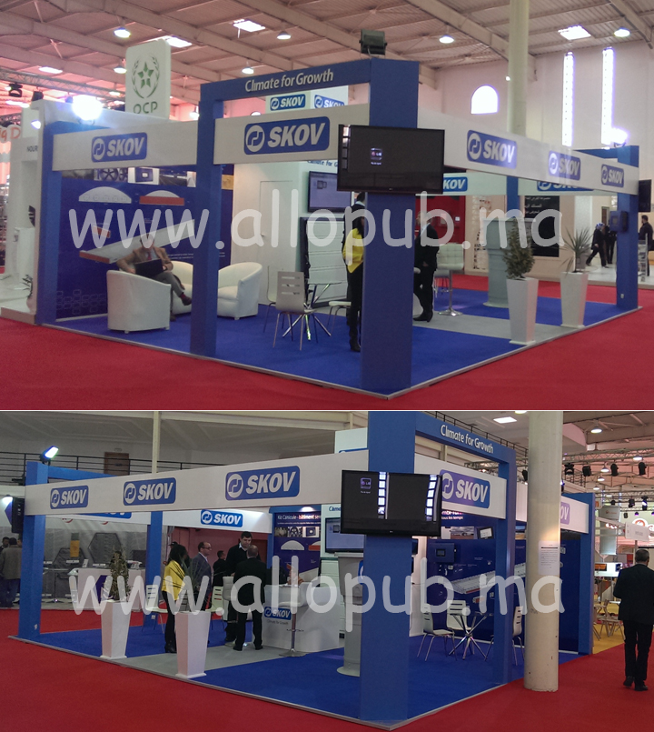
Skov
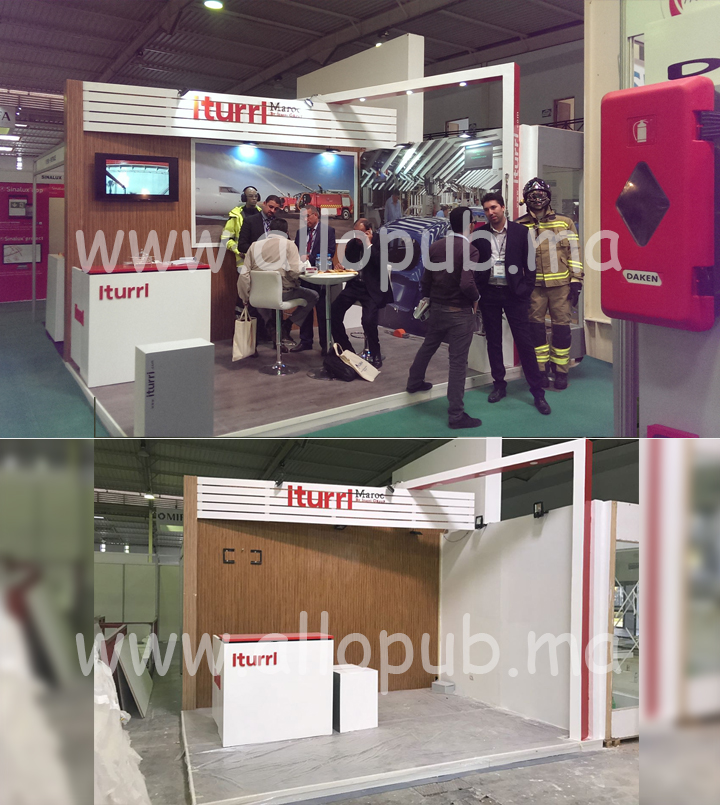
Iturri
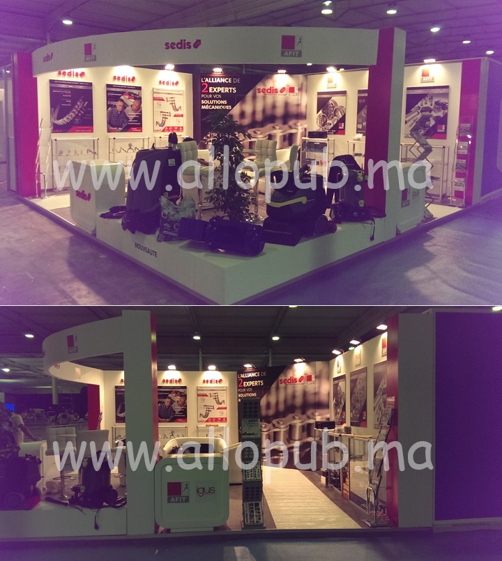
AFIT
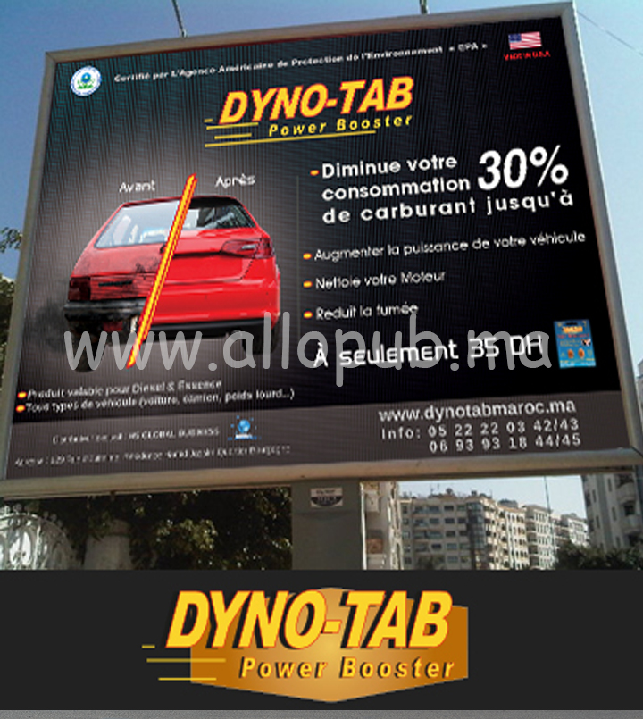
Dyno-Tab
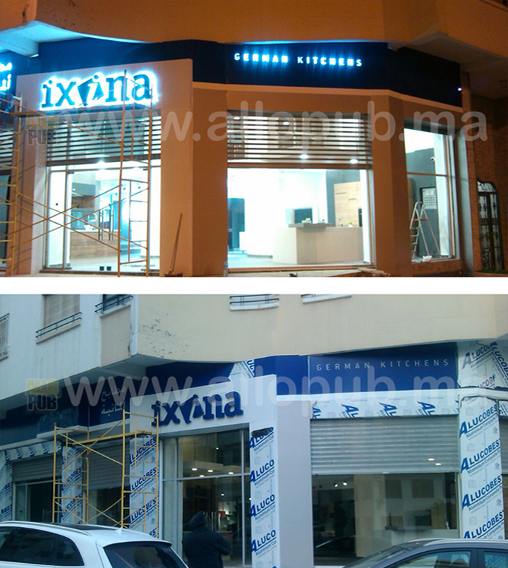
Ixina
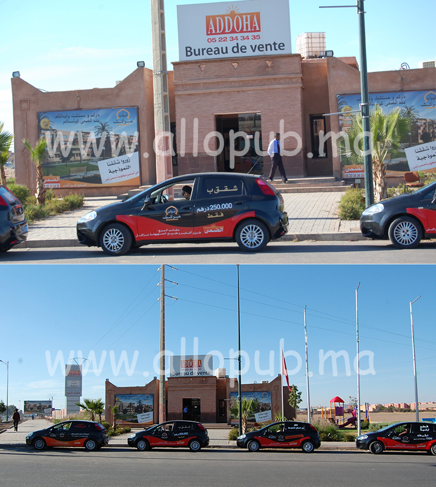
Adoha
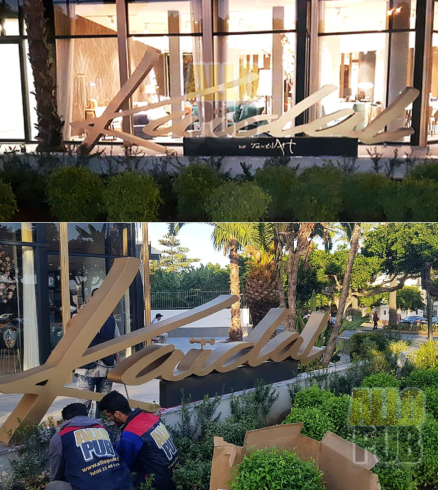
Kaidal
Nos services d’impression.
De votre enseigne commerciale aux impressions grand format, un service de conseil et de création publicitaire adapté à chaque budget.
Tous les services ↗
-
Chantier
Impression palissade de chantier
Panneaux de chantier, bâches et habillage de palissade sur mesure.
Découvrir ce service ↗ -
Vinyle
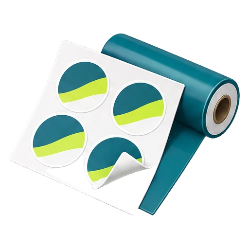
Impression sur vinyleStickers, vitrines, décors muraux et signalétique, en finition mate, brillante ou pelliculée.
Découvrir ce service ↗ -
Vitrine
Impression de vitrine
Vitrophanie, adhésifs imprimés, microperforé, dépoli et lettrage pour vos vitrines.
Découvrir ce service ↗ -
Bâche
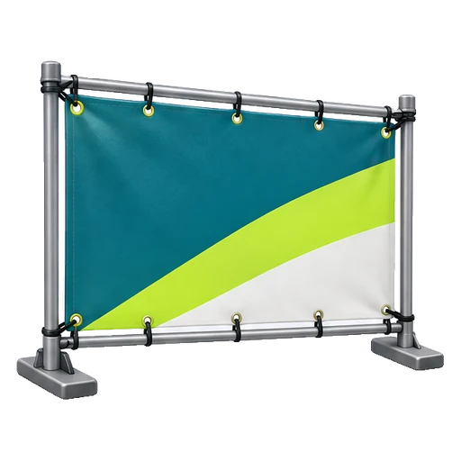
Impression sur bâchePour façades, événements et chantiers, avec œillets et renforts.
Découvrir ce service ↗ -
Numérique
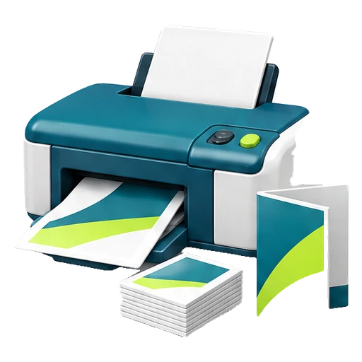
Impression numériqueCartes de visite, flyers, invitations et petites brochures, en petites séries.
Découvrir ce service ↗ -
Grand format
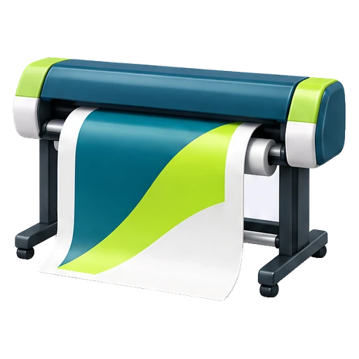
Impression grand formatAffiches, panneaux publicitaires, bâches et visuels d’événement.
Découvrir ce service ↗ -
Publicitaire
Industrie publicitaire
Enseignes, présentoirs, roll-up, stands et signalétique.
Découvrir ce service ↗ -
Véhicule
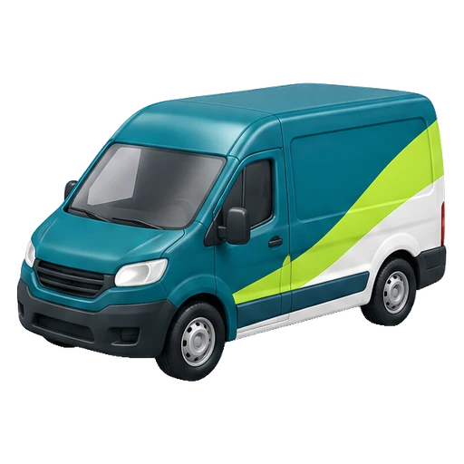
Habillage de véhiculeLettrage, marquage de flotte et covering partiel de voitures et utilitaires.
Découvrir ce service ↗ -
Design
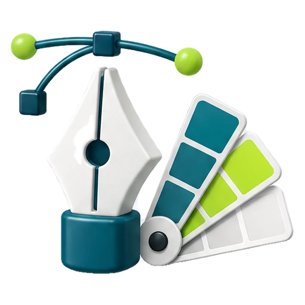
Design graphiqueCréation de logo, identité visuelle et mise en page de vos supports imprimés.
Découvrir ce service ↗ -
Stands
Aménagement de stands d’exposition
Conception, impression et aménagement de stands sur mesure pour vos salons et foires.
Découvrir ce service ↗
Un projet en tête ?
Devis gratuit. Nous vous conseillons sur le support, le format et les finitions.
Demander un devis Nous contacterQuestions fréquentes.
Quels documents imprimez-vous ?
Documents administratifs, commerciaux et publicitaires, étiquettes et adhésifs, panneaux, édition de livres, faire-part, menus et invitations, photocopies noir et couleur, plaques à tampons. Petits et grands formats, toutes quantités.
Quel support choisir ?
Le numérique est idéal pour les petites séries et les documents personnalisés. Pour la visibilité, choisissez entre grand format, bâche, vinyle ou lettrage selon le lieu, la durée et le budget. Nous vous conseillons selon votre projet.
Pouvez-vous créer mon logo et mes supports ?
Oui. Notre équipe de graphistes s’occupe de la création de logotypes, de la mise en page et de la conception de vos supports de communication, jusqu’à l’impression.
Puis-je voir des échantillons de papier ?
Bien sûr. N’hésitez pas à demander des échantillons de papier avec votre devis d’impression.
Vous lancez votre entreprise ?
AlloPrint est au service des nouveaux chefs d’entreprise. Pour les documents nécessaires à votre installation, nous vous aidons de la conception à la réalisation, à des prix attractifs.
Que peut-on imprimer en grand format ?
Affiches, banderoles, bâches, kakémonos, drapeaux et oriflammes ; enseignes, vitrophanie et vinyle adhésif ; posters rigides sur alu ou PVC, reproductions sur toile et textile.
Préparer votre projet d’impression
Comparez les supports, préparez vos fichiers et retrouvez les informations utiles pour demander un devis.